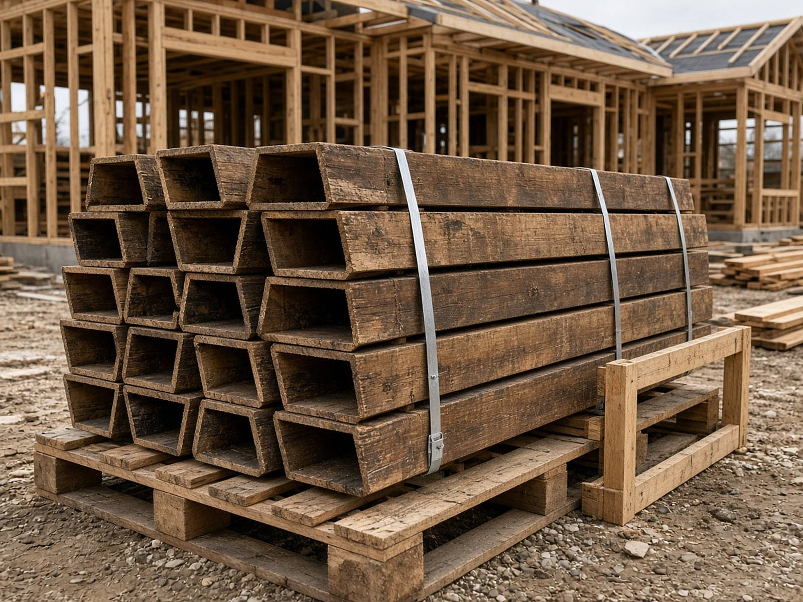
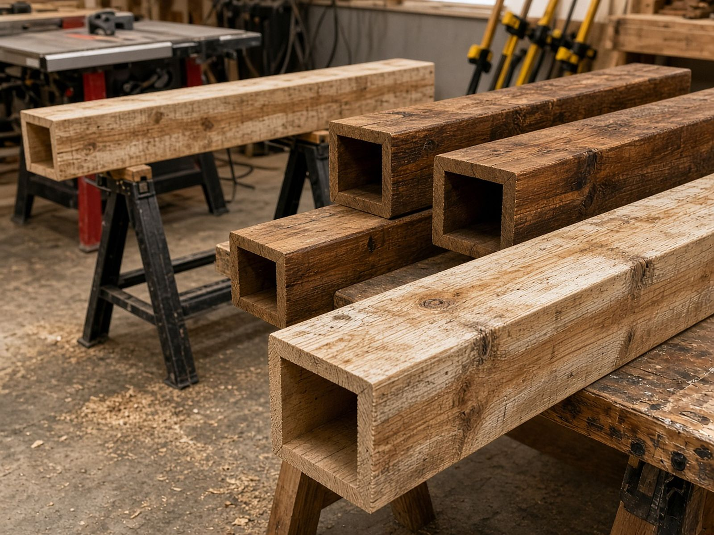
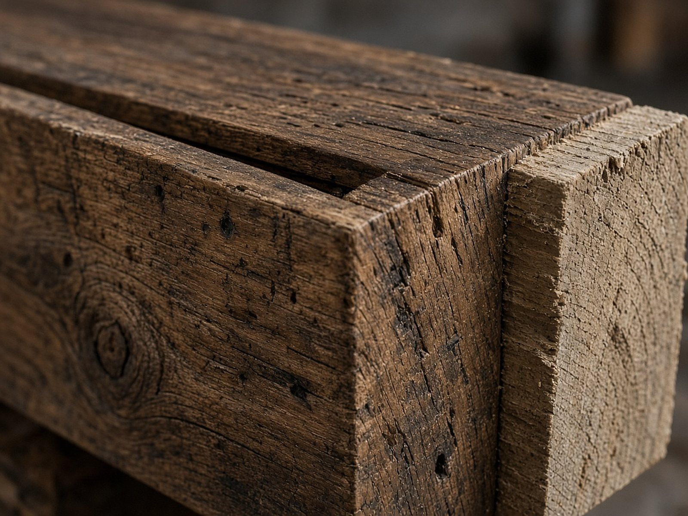

Jobsite install guide
How decorative box beams go up on the job.
A practical overview for home builders, GCs and remodelers: how a crate is received, how the beams mount, and how the finish is treated on site. Sizes are in the sizing guide. Other builder questions are in the FAQ.
These beams are decorative and non-structural. Follow your own framing, local code, and the job's details. This page is a general trade overview, not a stamped install instruction.

What you are hanging
You are hanging a three-sided, hollow, reclaimed-look box beam, open on top for mounting. It gives the look of a solid timber without the weight of solid stock.
These beams are decorative and non-structural. They wrap or hang below framing for appearance and are not load-bearing. The framing above them stays the structure. The beam is the finished look.
Heights and widths are 4, 6, 8, 10 or 12 inches. Each piece can be up to 24 feet long. Mix sizes and lengths on one order. Larger than 12 inches is quoted on request. The size list is on the sizing guide.
Before the crate arrives
Measure each run end to end along the finished ceiling line. List every length the job needs and order enough linear feet to cover each run. Note walls, soffits or breaks so pieces can be cut or butted cleanly on site.
Choose the finish when you order.
Prestained. Give the stain brand, type and color. Beams arrive finished and ready to hang. Protect the finished faces during handling.
Unfinished. The painter or finisher matches the house on site.
Lead time depends on size, quantity and finish. The ship or pickup date is confirmed with the quote. Put a deadline in the notes box on the order form.
Receiving the shipment
Beams ship as crated LTL freight anywhere in the lower 48 from Norman, Oklahoma. Local delivery is available within about 100 road miles of Norman, and pickup is available near Norman.
The order form estimates freight from the delivery ZIP, based on distance from Norman and the size of the order. Check liftgate if the jobsite has no dock or forklift. Freight is confirmed before payment.
Inspect the shipment on arrival. Match the pieces to the lengths on the order. If the crate is damaged or a piece does not match, note it with the driver and email wholesalebuilderbeam@agentmail.to.

Mounting over a cleat or blocking
The beam is open on top so it fits over a wood cleat or blocking fastened to the ceiling or beam line. The hollow shell hides the cleat once the beam is set and fastened from the sides or top returns.
Planning a wrap over an existing beam line, including how to measure and choose a size that will cover it, is in the wrap guide.
Fasten that cleat or blocking the way the framing on this job requires. Follow your own framing, local code, and the job's details. This overview does not set fastener size or spacing.
Set the beam over the cleat or blocking, line it up with the ceiling run, and fasten it from the sides or the top returns.

Cuts, joints and long runs
Each piece can be up to 24 feet. Where a run is longer than one piece, or a wall, soffit or break splits the line, cut or butt the pieces on site so they meet cleanly.
Order enough linear feet to cover each run, and list every length so the crate matches the ceiling. Lengths and sizes can be mixed on one order.
Finish notes on the job
Prestained beams arrive finished and ready to hang, in the stain brand, type and color from the order. Protect the finished faces during handling, including while pieces are carried, stacked, cut and lifted into place.
Unfinished beams stay unfinished until the painter or finisher matches the house on site.
After they are up
After the beams are up, they are still decorative and non-structural. They wrap or hang below framing for appearance and are not load-bearing.
How to order
Wholesale Builder Beam is trade only, for home builders, GCs and remodelers. Pricing is per linear foot by size and finish.
Fill out the order form with your contact and company, height, width, lengths, finish and delivery ZIP, then press Place order. The form shows an estimate. The final quote and freight are confirmed before payment. No card is charged on the order page.
Questions go to wholesalebuilderbeam@agentmail.to. Include sizes, finish, delivery ZIP and any deadline.
See the sizing guide for the spec sheet, or the builder FAQ for measuring, finish and delivery questions.
On the job
Install questions, answered.
Are decorative box beams structural once they are installed?
No. They are decorative and non-structural before and after they are hung. They wrap or hang below framing for appearance and are not load-bearing members.
How do you mount a three-sided box beam?
It is open on top so it fits over a wood cleat or blocking fastened to the ceiling or beam line. The hollow shell hides the cleat once the beam is set and fastened from the sides or top returns. Follow your own framing, local code, and the job's details. This is a general overview, not a stamped install instruction.
How long can one decorative box beam be?
Up to 24 feet per piece. Longer runs, and runs broken by walls, soffits or other breaks, are cut or butted on site. Measure each run end to end along the finished ceiling line and order enough linear feet to cover it.
What should I inspect when the crate arrives?
Beams ship as crated LTL freight. On arrival, match the pieces to the lengths on your order. If the crate is damaged or a piece does not match the order, note it with the driver and email wholesalebuilderbeam@agentmail.to.
How should prestained beams be handled on site?
Prestained beams arrive finished and ready to hang, in the stain brand, type and color you gave on the order. Protect the finished faces during handling. Unfinished beams wait for the painter or finisher to match the house on site.
When do I need a liftgate for jobsite delivery?
Check liftgate if the jobsite has no dock or forklift. The order form estimates freight from the delivery ZIP based on distance from Norman, Oklahoma, and the size of the order. Freight is confirmed before payment. Local delivery is within about 100 road miles of Norman, or you can pick up near Norman.